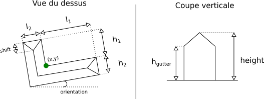

Génération de bâtiments en L
L'objectif de cette partie est de présenter un code permettant de générer des bâtiments en forme de L avec un toit typifié et de décrire les étapes à suivre pour générer des configurations avec d'autres types de forme à partir du simulateur basique présenté dans la première expérimentation.
Code exemple
L'exécution du code présenté ici se trouve dans la classe fr.ign.simplu3d.shapeGenerator.OptimisedLShapeDirectRejection du projet SimPLU3D-tutorial.

La classe de géométrie paramétrique utilisée (présentée dans le schéma précédent) comporte 10 dimensions :
- x : coordonnée x du centre de la forme ;
- y : coordonnée y du centre de la forme ;
- l1 : longueur de la forme hors barre du L ;
- l2 : longueur de la barre du L ;
- h1 : hauteur totale de la forme hors barre du L;
- h2 : hauteur totale de la barre du L;
- height : hauteur maximale de la forme ;
- orientation : orientation (azimut) du L ;
- hgutter : hauteur à la gouttière.
- shift : pente du toit aux extrémités du L (entre 0 pas de pente et 1 pente jusqu'au milieu de la forme).
Définition de la classe représentant la forme
La classe définissant la géométrie simulée est la classe fr.ign.cogit.simplu3d.rjmcmc.paramshp.geometry.impl.LBuildingWithRoof du projet SimPLU3D. Cette classe implémente la classe AbstractSimpleBuilding (comme nous simulons un objet de type bâtiment, comme c'est le cas pour la classe Cubboid). Cela implique l'instanciation de 3 niveaux de classes abstraites et d'interfaces : - la classe fr.ign.cogit.simplu3d.rjmcmc.cuboid.geometry.impl.AbstractSimpleBuilding de SimPLU3D-rules: qui contient les informations nécessaires pour modéliser un objet de type bâtiment de SimPLU3D ; - l'interface fr.ign.cogit.simplu3d.rjmcmc.generic.objectISimPLU3DPrimitive : qui contient les méthodes propres à SimPLU3D concernant l'optimisation de forme ; - l'interface de la librjmcmc4j fr.ign.geometry.Primitive : qui contient les informations nécessaires pour simuler des objets géographiques avec la librjmcmc4j. Seule l'implémentation de la dernière interface est nécessaire pour générer des formes, les deux autres niveaux enrichissent les méthodes accessibles pour la vérification des règles et la définition de la fonction d'optimisation. Elles facilitent également la ré-utilisation du code de la première simulation.
L'implémentation de l'interface Primitive nécessite la définition des méthodes suivantes :
- int size(); : renvoie la taille de la dimension de la forme (ici 10 pour le bâtiment en L) ;
- double[] toArray() : traduit les attributs de la classe en un tableau de double (il s'agit ici d'un tableau de dimension 10 contenant les valeurs des différentes dimensions de la forme) ;
- Object[] getArray(); : même méthode que précédemment, mais avec des valeurs sous forme d'objets ;
- void set(List
list); : affecte aux attributs de la classe les valeurs provenant d'un tableau de double (ici une liste de 10 chiffres qui correspondent aux 10 dimensions de la classe) ; - double intersectionArea(Primitive p); : évalue la surface de l'intersection 2D avec une autre primitive (ici avec d'autres bâtiments en L) ;
- Geometry toGeometry(); : convertit la forme en géométrie 2D JTS (ici l'emprise 2D du bâtiment, la conversion JTS permet d'optimiser les temps de calcul par rapport à l'utilisation de géométries GeOxygene) ;
- double getArea(); : l'aire 2D de l'emprise de la forme.
La classe LBuildingWithRoof implémente cette interface à travers la classe AbstractSimpleBuilding. Elle implémente également l'interface fr.ign.cogit.simplu3d.rjmcmc.generic.object.ISimPLU3DPrimitive qui est nécessaire pour pouvoir appliquer le vérificateur de forme. Cela nécessite l'implémentation de trois méthodes :
- double getHeight(); : la hauteur maximale de la forme ;
- double getVolume(); : le volume de la forme ;
- IGeometry generated3DGeom(); renvoie une géométrie GeOXygene3D de la forme, utile pour la vérification de règles ou pour l'export des données.
Définition d'une classe de constructeur
Il s'agit de la classe fr.ign.cogit.simplu3d.rjmcmc.paramshp.builder.LBuildingWithRoofBuilder qui étend la classe de la librjmcmc4j fr.ign.mpp.kernelObjectBuilder
- T build(double[] val); : instance un objet de la classe paramétrée (ici LBuildingWithRoof) à partir d'un tableau de valeurs de double ;
- void setCoordinates(T t, double[] val); : affecte les coordonnées d'un tableau de doubles à un objet de la classe paramétrée ;
- int size(); : la dimension de la taille des objets construits par le constructeur (ici 10).
Définition de l'optimiseur
L'optimiseur est défini dans la classe fr.ign.cogit.simplu3d.rjmcmc.paramshp.optimizer. OptimisedLShapeDirectRejection dans le projet SimPLU3D. L'étape peut sembler complexe car le code de la classe est très long, néanmoins, comme presque toutes les méthodes à définir sont les mêmes que celles utilisée pour simuler des formes composées de boîtes (fr.ign.cogit.simplu3d.rjmcmc.cuboid.optimizer.cuboid.OptimisedBuildingsCuboidFinalDirectRejection) mais paramétrées avec la classe LBuildingWithRoof.
La seule méthode significativement différente est create_sampler qui créé l'échantillonneur de bâtiments en L. L'implémentation de cette méthode est similaire à celle des boîtes avec la définition des intervalles de tirage, du constructeur d'objets et des noyaux de modification. Le code de cette méthode est repris et commenté ci-dessous :
/**
*
* @param rng a random generator
* @param p a json parameter files
* @param bpU a basic property unit
* @param pred a predicate to check the rules
* @param polygon a polygon that contains al the cuboid
* @return a sampler for the optimization process
*/
public Sampler<GraphConfiguration<LBuildingWithRoof>, BirthDeathModification<LBuildingWithRoof>> create_sampler(
RandomGenerator rng, SimpluParameters p, BasicPropertyUnit bpU,
ConfigurationModificationPredicate<GraphConfiguration<LBuildingWithRoof>, BirthDeathModification<LBuildingWithRoof>> pred,
IGeometry polygon) {
// On créé les bornes min et max pour le sampler (10 paramètres dans le
// cas du LBuildingWithRoof)
IEnvelope env = polygon.envelope();
double xmin = env.getLowerCorner().getX();
double xmax = env.getUpperCorner().getX();
double ymin = env.getLowerCorner().getY();
double ymax = env.getUpperCorner().getY();
double l1min = p.getDouble("l1min");
double l1max = p.getDouble("l1max");
double l2min = p.getDouble("l2min");
double l2max = p.getDouble("l2max");
double h1min = p.getDouble("h1min");
double h1max = p.getDouble("h1max");
double h2min = p.getDouble("h2min");
double h2max = p.getDouble("h2max");
double heightToTopMin = p.getDouble("heightToTopMin");
double heightToTopgMax = p.getDouble("heightToTopgMax");
double orientationMin = 0;
double orientationMax = Math.PI;
double heightgutterMin = p.getDouble("heightgutterMin");
;
double heightguterrMax = p.getDouble("heightgutterMax");
;
double shiftMin = 0;
double shiftMax = 1;
// A priori on redéfini le constructeur de l'objet
// A priori on redéfini le constructeur de l'objet
LBuildingWithRoofBuilder builder = new LBuildingWithRoofBuilder();
// On initialise la surface sur laquelle on fait la simulation
if (samplingSurface == null) {
samplingSurface = bpU.getPol2D();
}
// On initialise l'espace sur lequel on va calculer les objets
// (normalement tu as juste à changer le nom des classes)
UniformBirth<LBuildingWithRoof> birth = new UniformBirth<LBuildingWithRoof>(rng,
new LBuildingWithRoof(xmin, ymin, l1min, l2min, h1min, h2min, heightToTopMin, orientationMin,
heightgutterMin, shiftMin),
new LBuildingWithRoof(xmax, ymax, l1max, l2max, h1max, h2max, heightToTopgMax, orientationMax,
heightguterrMax, shiftMax),
builder, TransformToSurface.class, (IGeometry) polygon);
// La distribution de poisson qui drive le nombre total d'objets
PoissonDistribution distribution = new PoissonDistribution(rng, p.getDouble("poisson"));
// Le sampler qui détermine comment on tire aléatoirement un objet dans
// l'espace défini
DirectSampler<LBuildingWithRoof, GraphConfiguration<LBuildingWithRoof>, BirthDeathModification<LBuildingWithRoof>> ds = new DirectRejectionSampler<>(
distribution, birth, pred);
// Probabilité de naissance-morts modifications
List<Kernel<GraphConfiguration<LBuildingWithRoof>, BirthDeathModification<LBuildingWithRoof>>> kernels = new ArrayList<>(
3);
KernelFactory<LBuildingWithRoof, GraphConfiguration<LBuildingWithRoof>, BirthDeathModification<LBuildingWithRoof>> factory = new KernelFactory<>();
// On liste les kernels, pour le premier, tu devrais probablement le
// définir toi ....
kernels.add(
factory.make_uniform_birth_death_kernel(rng, builder, birth, p.getDouble("pbirth"), 1.0, "BirthDeath"));
double amplitudeMove = p.getDouble("amplitudeMove");
kernels.add(factory.make_uniform_modification_kernel(rng, builder, new MoveLShapeBuilding(amplitudeMove), 0.2,
"Move"));
// Pour les autres, le ChangeValue peut être utiliser (attention, le
// deuxième arguement est la taille de ton builder +1)
// car il utilise un tableau pour stocker les paramètres et le +1 est
// pour stocker de manière temporaire le tirage aléatoire
double amplitudeMaxDim = p.getDouble("amplitudeMaxDim");
kernels.add(factory.make_uniform_modification_kernel(rng, builder,
new ChangeValue(amplitudeMaxDim, builder.size() + 1, 2), 0.2, "h1Change"));
kernels.add(factory.make_uniform_modification_kernel(rng, builder,
new ChangeValue(amplitudeMaxDim, builder.size() + 1, 3), 0.2, "h2Change"));
kernels.add(factory.make_uniform_modification_kernel(rng, builder,
new ChangeValue(amplitudeMaxDim, builder.size() + 1, 4), 0.2, "l1Change"));
kernels.add(factory.make_uniform_modification_kernel(rng, builder,
new ChangeValue(amplitudeMaxDim, builder.size() + 1, 5), 0.2, "l2Change"));
double amplitudeHeight = p.getDouble("amplitudeHeight");
kernels.add(factory.make_uniform_modification_kernel(rng, builder,
new ChangeValue(amplitudeHeight, builder.size() + 1, 6), 0.2, "heightChange"));
double amplitudeRotate = p.getDouble("amplitudeRotate") * Math.PI / 180;
kernels.add(factory.make_uniform_modification_kernel(rng, builder,
new ChangeValue(amplitudeRotate, builder.size() + 1, 7), 0.2, "Rotate"));
kernels.add(factory.make_uniform_modification_kernel(rng, builder,
new ChangeValue(amplitudeHeight, builder.size() + 1, 8), 0.2, "changeHeightGutter"));
kernels.add(factory.make_uniform_modification_kernel(rng, builder, new ChangeValue(0.1, builder.size() + 1, 9),
0.2, "changeShift"));
// On instancie le sampler avec tous les objets.
Sampler<GraphConfiguration<LBuildingWithRoof>, BirthDeathModification<LBuildingWithRoof>> s = new GreenSamplerBlockTemperature<>(
rng, ds, new MetropolisAcceptance<SimpleTemperature>(), kernels);
return s;
}
Implémentation de l'exécution
Le code exécuté se trouve dans la classe fr.ign.simplu3d.shapeGenerator.OptimisedLShapeDirectRejection du projet SimPLU3D-tutoriel. Les différences par rapport à la simulation basique de formes composées de boîtes sont : - l'utilisation du nouvel optimiseur ; - la prise en compte d'un autre fichier de configurations, le bâtiment en L ayant besoin de la définition de plus d'intervalles de valeurs ; - un code spécifique pour écrire les sorties des formes.
On peut noter que le vérificateur de règles utilisé est le même que pour la simulation de formes composées de boîtes et qu'il n'est pas nécessaire de le définir grâce aux interfaces implémentées.
// Step 0 ; Defining an output existing folder
String outputFolder = "/tmp/";
// Step 1 : Creating the geographic environment using the repository that
// contains the data
// Load default environment (data are in resource directory)
Environnement env = LoaderSHP.loadNoDTM(new File(
BasicParametricShapeSimulator.class.getClassLoader().getResource("firstSimulation/data/").getPath()));
// Select a parcel on which generation is proceeded
BasicPropertyUnit bPU = env.getBpU().get(2);
// Step 2 : Defining the regulation that will be applied during the simulation
// Rules parameters.8
// Distance to road
double distReculVoirie = 0;
// Distance to bottom of the parcel
double distReculFond = 0;
// Distance to lateral parcel limits
double distReculLat = 0;
// Distance between two buildings of a parcel
double distanceInterBati = 3;
// Maximal ratio built area
double maximalCES = 1;
// Instanciation of a predicate class
// Same as in the first sample fr.ign.simplu3d.firstSimulation.BasicSimulator
// As LBuildingWithRoof and Cuboid extends ISimPLU3DPrimitive
SamplePredicate<LBuildingWithRoof, GraphConfiguration<LBuildingWithRoof>, BirthDeathModification<LBuildingWithRoof>> pred = new SamplePredicate<>(
bPU, distReculVoirie, distReculFond, distReculLat, distanceInterBati, maximalCES);
// Step 3 : Defining the sampler that will be applied during the simulation
// Instantiation of the sampler
OptimisedLShapeDirectRejection optimisedLShapedSampler = new OptimisedLShapeDirectRejection();
// Loading the parameters for the building shape generation
String folderName = BasicParametricShapeSimulator.class.getClassLoader()
.getResource("firstSimulation/scenario/").getPath();
// We use a specific scenario dedicated to LShape
String fileName = "paramsLShape.json";
SimpluParameters p = new SimpluParametersJSON(new File(folderName + fileName));
// Run of the optimisation on a parcel with the predicate
GraphConfiguration<? extends ISimPLU3DPrimitive> cc = optimisedLShapedSampler.process(bPU, p, env, bPU.getId(),
pred, bPU.getGeom());
// 4 - Writing the output
IFeatureCollection<IFeature> iFeatC = new FT_FeatureCollection<>();
for (GraphVertex<? extends ISimPLU3DPrimitive> v : cc.getGraph().vertexSet()) {
IFeature feat = new DefaultFeature(v.getValue().generated3DGeom());
// On ajoute des attributs aux entités (dimension des objets)
AttributeManager.addAttribute(feat, "Info", v.getValue().toString(), "Double");
iFeatC.add(feat);
}
// Writng the shapefile from the collection
ShapefileWriter.write(iFeatC, outputFolder + "out.shp");